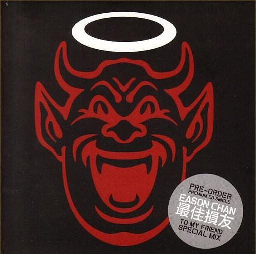

最佳损友

- 专辑《Life Continues》
- 表演者: 陈奕迅 / 陳奕迅
- 作词:黄伟文
《最佳损友》出自于陈奕迅专辑《U 87》，这张专辑的主题是探究人生，希望带出人生是有喜有悲，勿因挫折而自寻短见的讯息，其中不少新歌是他对家庭、事业及人生的写照。 《最佳损友》是Eason继一曲《夕阳无限好》后再与Eric Kwok 合作，黄伟文填词。找了和杨千嬅同年同月同日生的Eric Kwok来作曲编曲，又找了杨千嬅的老友陈奕迅来演唱。做这首歌当天，Eric就让杨千嬅一定要好好听。
歌词欣赏
朋友 我当你一秒朋友 朋友 我当你一世朋友 奇怪 过去再不堪回首 怀缅 时时其实还有 朋友 你试过将我营救 朋友 你试过把我批斗 无法 再与你交心联手 毕竟 难得有过最佳损友 从前共你 促膝把酒 倾通宵都不够 我有痛快过 你有没有 很多东西今生只可给你 保守至到永久 别人如何明白透 实实在在 踏入过我宇宙 即使相处到 有个裂口 命运决定了 以后再没法聚头 但说过去 却那样厚 问我有没有 确实也没有 一直躲避的藉口 非什么大仇 为何旧知己 在最后 变不到老友 不知你是我敌友 已没法望透 被推着走 跟着生活流 来年陌生的 是昨日最亲的某某 生死之交当天不知罕有 到你变节了 至觉未够 多想一天 彼此都不追究 相邀再次喝酒 待 葡萄成熟透 但是命运入面 每个邂逅 一起走到了 某个路口 是敌与是友 各自也没有自由 位置变了 各有队友 问我有没有 确实也没有 一直躲避的藉口 非什么大仇 为何旧知己 在最后 变不到老友 不知你是我敌友 已没法望透 被推着走 跟着生活流 来年陌生的 是昨日最亲的某某 早知解散后 各自有际遇作导游 奇就奇在 接受了 各自有路走 却没人像你 让我 眼泪背着流 严重似情侣 讲分手 有没有 确实也没有 一直躲避的藉口 非什么大仇 为何旧知己 在最后 变不到老友 不知你又有没有 挂念这旧友 或者自己 早就想通透 来年陌生的 是昨日 最亲的某某 总好于 那日我 没有 没有 遇过 某某